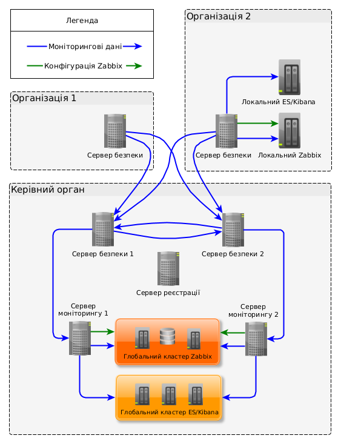

1. Вступ
1.1. Опис
Цей посібник користувача описує порядок налаштування моніторингу серверів безпеки на рівні організації. Посібник містить інструкції з надсилання зібраних даних на Zabbix та Elasticsearch сервери для їх подальшого опрацювання та візуалізації.
Моніторинг виконується за допомогою доповнення Агент моніторингу (Proxy Monitoring Agent або скорочено PMA). Доповнення PMA встановлюється разом з встановленням серверу, тому не потребує ніяких окремих встановлень.
| Якщо вам потрібно налаштувати моніторинг на центральному рівні, використовуючи сервер моніторингу, скористайтесь посібником з встановлення та налаштування Серверу моніторингу UXP [UA-UXP-IG-MS]. |
1.2. Цільова аудиторія
Цільовою аудиторією цього посібника є системні адміністратори відповідальні за моніторинг серверів безпеки UXP в організації.
Документ призначено для читачів із середнім рівнем знань у сферах керування Linux серверами, комп’ютерних мереж та принципів роботи системи UXP.
Крім того, необхідні базові знання з реалізації моніторингових рішень на основі Zabbix, а також використання інструментів аналізу даних Elasticsearch та Kibana. Додаткова інформація міститься у відповідних розділах документації Zabbix [Zabbix], Elasticsearch та Kibana [Elastic].
1.3. Використані джерела
-
[CRON] CRON вирази для Quartz Scheduler,
http://www.quartz-scheduler.org/documentation/quartz-2.3.0/tutorials/crontrigger.html -
[DATE-TIME-FORMATTER] DateTimeFormatter (Java SE 17 & JDK 17),
https://docs.oracle.com/en/java/javase/17/docs/api/java.base/java/time/format/DateTimeFormatter.html -
[Elastic] Ознайомлення з Elastic | Elastic,
https://www.elastic.co/guide/index.html -
[Elastic-Authorization] Авторизація користувачів | Посібник з Elasticsearch,
https://www.elastic.co/guide/en/elasticsearch/reference/8.17/authorization.html -
[Elastic-Cluster] Додавання і видалення вузлів у вашому кластері | Посібник з Elasticsearch,
https://www.elastic.co/guide/en/elasticsearch/reference/8.17/high-availability.html -
[Elastic-Heap] Важливі налаштування Elasticsearch | Посібник з Elasticsearch,
https://www.elastic.co/guide/en/elasticsearch/reference/8.17/important-settings.html#heap-size-settings -
[Elastic-Security] Налаштування безпеки для Elastic Stack | Посібник з Elasticsearch,
https://www.elastic.co/guide/en/elasticsearch/reference/8.17/configuring-stack-security.html -
[Elastic-Upgrade-7.17] Оновлення Elasticsearch | Посібник з Elasticsearch [7.17],
https://www.elastic.co/guide/en/elasticsearch/reference/7.17/setup-upgrade.html -
[Elastic-Upgrade-8.17] Оновлення Elasticsearch | Посібник з Elasticsearch [8.17],
https://www.elastic.co/guide/en/elasticsearch/reference/8.17/setup-upgrade.html -
[Time-Zones] Список підтримуваних часових поясів,
http://php.net/manual/en/timezones.php -
[UA-UXP-IG-MS] Cybernetica AS. Сервер моніторингу UXP: Посібник з встановлення та налаштування. Ідентифікатор документа: UA-UXP-IG-MS
-
[UXP-PR-MESS] Cybernetica AS. Протокол повідомлень UXP v4.0: Технічна специфікація. Ідентифікатор документа: UXP-PR-MESS
-
[UXP-PR-MON] Cybernetica AS. Протокол моніторингу UXP: Технічна специфікація. Ідентифікатор документа: UXP-PR-MON
-
[UA-UXP-UG-SSHA] Cybernetica AS. Сервер безпеки UXP: Налаштування Високої доступності та Балансування навантаження. Ідентифікатор документа: UA-UXP-UG-SSHA
-
[Zabbix] Документація по Zabbix,
http://www.zabbix.com/documentation.php -
[Zabbix-Discovery] Керівництво по Zabbix, Виявлення,
https://www.zabbix.com/documentation/6.0/en/manual/discovery -
[Zabbix-Frontend] Керівництво по Zabbix, Встановлення вебінтерфейсу,
https://www.zabbix.com/documentation/6.0/en/manual/installation/frontend -
[Zabbix-HA] Керівництво по Zabbix, Висока доступність,
https://www.zabbix.com/documentation/6.0/en/manual/concepts/server/ha -
[Zabbix-Requirements] Керівництво по Zabbix, Системні вимоги
https://www.zabbix.com/documentation/6.0/en/manual/installation/requirements#database-size
2. Моніторинг серверів безпеки UXP
2.1. Типи моніторингових даних
Сервер безпеки генерує чотири типи моніторингових даних.
- Дані моніторингу середовища
-
Інформація щодо поточного статусу серверу безпеки. Наприклад, споживання пам’яті, завантаженість CPU, версії пакетів, тощо.
- Дані операційного моніторингу
-
Інформація щодо опрацьованих сервером безпеки запитів. Зокрема, сюди входять такі дані як ідентифікатор запиту, ідентифікатор клієнта, ідентифікатор сервісу, різноманітні атрибути зчитані із заголовків SOAP повідомлень або із заголовків HTTP (REST), позначки часу запитів і відповідей, розмір запитів, тощо.
- Статистика по даних операційного моніторингу
-
Статистичні показники розраховані на основі даних операційного моніторингу. Така статистика відображає загальну кількість транзакцій та кількість успішних транзакцій для кожної унікальної комбінації ідентифікатора і типу серверу безпеки, ідентифікатора клієнта і ідентифікатора сервісу за певний період часу.
- Діагностичні дані
-
Статистичні показники на основі даних моніторингу середовища і операцій. Наприклад, час останнього успішного запиту та кількість неуспішних запитів.
2.2. Рівні моніторингу
У системі UXP моніторинг може здійснюватися на двох рівнях – організації і центральному. На рисунку 1 зображено компоненти системи моніторингу UXP.

-
На рівні організації (локальному) доповнення серверу безпеки надсилає свої дані моніторингу середовища до локально налаштованого Zabbix, а дані операційного моніторингу до локально налаштованого Elasticsearch (на діаграмі позначено синіми стрілками).
-
На центральному (глобальному) рівні адміністратор серверу реєстрації може встановити один або кілька (кластер) серверів для моніторингу, які можуть збирати інформацію з серверів безпеки (на діаграмі позначено синіми стрілками). Сервер моніторингу використовує власний сервер безпеки і зареєстрованого на ньому клієнта (так званий клієнт центрального моніторингу) для опрацювання моніторингових запитів. Сервер моніторингу передає зібрані дані моніторингу середовища до Zabbix (кластеру), а дані операційного моніторингу та відповідну статистику до Elasticsearch (кластеру) (на діаграмі позначено синіми стрілками).
Інформація про клієнта центрального моніторингу фіксується на сервері реєстрації і поширюється через глобальну конфігурацію на всі сервери безпеки і сервери моніторингу.
Зв’язок між сервером безпеки клієнта центрального моніторингу та сервером моніторингу має бути налаштований через протокол HTTPS. Як сервер безпеки, так і сервер моніторингу використовують свої внутрішні TLS сертифікати, які відповідно поширюються іншій стороні вручну. Здійснюється автентифікація як клієнта, так і серверу.
Сервіси моніторингу реалізовані на сервері безпеки як стандартні UXP сервіси. Подробиці специфікації Протоколу моніторингу UXP і Протоколу повідомлень UXP можна знайти у [UXP-PR-MON] та [UXP-PR-MESS].
Як доповнення серверу безпеки, так і сервер моніторингу можуть отримати автоматичні налаштування об’єктів моніторингу в Zabbix, тому потреби ручного налаштування немає (на діаграмі позначено зеленими стрілками).
2.3. Контроль доступу до моніторингових даних
Доступність моніторингових даних не однакова для всіх клієнтів сервісу. Доступ до даних моніторингу для них є контрольованим, щоб захистити подробиці використання сервісу учасниками системи UXP і відомості про справність серверів безпеки від сторонніх осіб. Водночас, для центрального моніторингу доступні усі дані моніторингу з метою відстеження справності екземпляра системи UXP.
| Власник серверу безпеки може надіслати запит на отримання повного пакету даних моніторингу його серверу безпеки. Для попередження несанкціонованого доступу до моніторингових даних, з’єднання між сервером безпеки та інформаційною системою, що здійснює запит від імені власника серверу безпеки, повинне виконуватися за протоколом HTTPS. Відповідне налаштування реалізовано на вкладці "Внутрішні сервери" розділу реквізитів власника серверу безпеки. |
2.3.1. Права доступу до даних моніторингу середовища
-
Клієнт центрального моніторингу може отримувати дані моніторингу середовища на усіх серверах безпеки екземпляра системи UXP. Це право використовується сервером моніторингу для збору моніторингових даних з усіх серверів безпеки екземпляра системи UXP.
-
Власник серверу безпеки може отримувати дані моніторингу середовища лише з свого власного серверу безпеки.
2.3.2. Права доступу до даних операційного моніторингу та відповідної статистики
-
Клієнт центрального моніторингу може отримувати дані операційного моніторингу та статистики опрацювання запитів на усіх серверах безпеки екземпляра системи UXP. Це право використовується сервером моніторингу для збору моніторингових даних з усіх екземплярів системи UXP.
-
Власник серверу безпеки може отримувати дані операційного моніторингу і відповідну статистику щодо усіх опрацьованих запитів лише з свого власного серверу безпеки.
-
Отримувати дані операційного моніторингу і відповідну статистику опрацювання запитів можуть усі клієнти серверу безпеки, незалежно від того, чи є вони клієнтами, чи постачальниками сервісу. Клієнти сервісу можуть здійснювати запити щодо своїх даних операційного моніторингу і відповідної статистики від будь-якого серверу безпеки екземпляра системи UXP.
2.3.3. Права доступу до діагностичних даних
-
Усі клієнти (включно з власниками серверів безпеки та клієнтом централізованого моніторингу) можуть здійснювати запити щодо діагностичних даних усіх серверів безпеки.
2.4. Використання сервісів моніторингу
Права клієнта центрального моніторингу використовуються сервером моніторингу UXP для спостереження за усім екземпляром системи UXP.
Права власника серверу безпеки та клієнтів можуть використовуватися учасниками системи UXP для реалізації їх власних додатків збору і опрацювання моніторингових даних. Наприклад, якщо зовнішніх інструментів моніторингу (Zabbix, Elasticsearch/Kibana), які стандартно підтримуються компонентами системи UXP, недостатньо для досягнення певної бізнес-мети.
Технічні подробиці використання сервісів моніторингу знаходяться у специфікації Протоколу моніторингу UXP [UXP-PR-MON].
2.5. Стандартні порти для моніторингу
Наступна таблиця містить список стандартних портів, які використовуються надбудовою серверу безпеки PMA для отримання запитів та з’єднання з серверами Zabbix і Elasticsearch. Якщо налаштовано використання інших портів, ніж стандартні, (див. розділи Встановлення Zabbix та Налаштування Elasticsearch та Kibana), використовуйте їх, замість вказаних у таблиці.
| Використання будь-яких інших додаткових сервісів, необхідних для роботи чи керування операційною системою (наприклад, DNS, NTP або SSH) не розглядається в даному посібнику. |
- Порти, необхідні для для вхідних з’єднань до серверу безпеки
| Port (TCP) | Призначення | Область мережі |
|---|---|---|
2082 |
Використовується для прослуховування запитів сервісів щодо інформації про статус. Необхідно лише у випадку використання внутрішнього балансувальника навантаження, щоб розподіляти запити між вузлами кластеру серверу безпеки (див. [UA-UXP-UG-SSHA]). |
ПРИВАТНА |
- Порти, необхідні для для вихідних з’єднань із серверу безпеки
| Port (TCP) | Призначення | Область мережі |
|---|---|---|
8080 |
Використовується для віддаленого налаштування серверу Zabbix. Необхідно лише у випадку використання Zabbix для локального моніторингу серверу безпеки за допомогою вбудованого в UXP конфігуратора Zabbix. |
ПРИВАТНА |
10051 |
Використовується для пересилання моніторингових даних на сервер Zabbix server. Необхідно лише у випадку використання Zabbix для локального моніторингу серверу безпеки. |
ПРИВАТНА |
9200 |
Використовується для пересилання даних операційного моніторингу на сервер Elasticsearch (RESTful API). Необхідно лише у випадку використання Elasticsearch для локального моніторингу серверу безпеки. |
ПРИВАТНА |
Область мережі визначає чи буде порт видимий лише у ПРИВАТНІЙ мережі (наприклад, у межах вашої організації), чи порти будуть видимі у ВІДКРИТІЙ мережі (Інтернет). Приховування портів, які використовуються лише для з’єднань у приватній мережі вашої організації знижує ризик нападів на безпеку з відкритої мережі.
2.6. Перевірені версії Zabbix та Elasticsearch
PMA було протестовано і підтверджено сумісність його роботи з:
-
Zabbix версії 6.0 (LTS),
-
Elasticsearch та Kibana версій 7.x та 8.x.
| UXP PMA не сумісний із Zabbix 5.0 та старіших версій. |
| UXP PMA більше не сумісний із Elasticsearch та Kibana версій 6.x. |
3. Моніторинг середовища
PMA періодично збирає дані про середовище серверу безпеки (стандартно, кожні 15 секунд) та кешує їх у пам’яті.
Зібрані дані потрібно передати на Zabbix з метою організації централізованої аналітики, сповіщень та звітів. Для цього, встановіть необхідний екземпляр Zabbix (версії 6.0 LTS) або використайте наявний і налаштуйте його з допомогою PMA.
Ви можете використовувати єдиний сервер Zabbix або рішення для високої доступності (HA) [Zabbix-HA], залежно від масштабу вашого середовища та ваших вимог до надійності та відмовостійкості. У режимі Zabbix HA, кілька серверів Zabbix працюють як вузли кластеру і використовують одну базу даних. Поки один сервер Zabbix у кластері активний, інші перебувають у стані очікування, готові стати до роботи за потреби.
Якщо ви бажаєте використовувати наявний екземпляр Zabbix, переконайтеся, що він відповідає описаним у наступному розділі вимогам. Далі, можете пропустити розділ Встановлення Zabbix і продовжити налаштування згідно з інструкціями у розділі З’єднання Zabbix із агентом моніторингу (PMA). В іншому випадку, продовжте ознайомлення із розділом Встановлення Zabbix, щоб встановити сервер Zabbix відповідно до ваших потреб.
3.1. Системні вимоги до серверу Zabbix
-
Операційна система Ubuntu 22.04 Long-Term Support (LTS) для 64-бітної платформи;
-
2 ГБ оперативної пам’яті;
-
20 ГБ вільного місця на жорсткому диску.
|
Розмір бази даних Zabbix головним чином залежить від таких змінних, які визначають об’єм даних для зберігання історії:
На даний час, в шаблоні Zabbix для серверу безпеки Стандартно, Zabbix зберігає дані 90 днів, тобто, Залежно від типу бази даних та типів отримуваних значень даних (float, integer, string, файли журналів, тощо), розмір необхідного місця на диску для зберігання певного значення може бути від 40 байт до сотень байт. Зазвичай, це значення становить приблизно 90 байт для числового значення. Розмір текстового/журнального елементу передбачити точно неможливо, але справедливим є очікування на приблизно 500 байт для окремого значення. Для спрощення, припускаємо, що кожне значення типу string має розмір 90 байт. На даний час, шаблон для серверу безпеки містить 50 числових значень та 12 значень типу string (переважно це версії пакетів). В такому випадку, це означає, що 2.64млн значень потребуватимуть Zabbix зберігає 1-годинний max/min/avg/count набір значень для кожного елементу у таблиці динаміки змін, стандартно для 1 року. В такому разі, це означає, що 62 елементи потребують Кожна подія в Zabbix потребує приблизно 250 байт, а відновлювана подія 80 байт дискового простору. Оцінити кількість подій, щоденно генерованих на Zabbix, важко. Стандартно, Zabbix зберігає події для 1 року. У найгіршому випадку, припускаючи 1 подію на секунду, це потребуватиме приблизно 10ГБ дискового простору: Таким чином, загальну потребу дискового простору можна розрахувати так: Конфігурація (зазвичай 10МБ або менше) + Історія + Динаміка змін + Події В такому разі, загальна потреба дискового простору буде становити Для визначення точної потреби вільного місця на диску саме у вашому випадку, ознайомтесь з інструкцією по [Zabbix-Requirements]. |
3.2. Встановлення Zabbix
| Рекомендується встановлювати Zabbix на іншому сервері, ніж той, на якому працює сервер безпеки. |
Ознайомтесь із розділом Встановлення єдиного серверу Zabbix у випадку встановлення єдиного серверу Zabbix, або зверніться до розділу Встановлення Zabbix у власному середовищі високої доступності (HA) у випадку встановлення Zabbix у власному середовищі високої доступності.
3.2.1. Встановлення єдиного серверу Zabbix
- Встановлення Zabbix 6.0 LTS з пакетів за допомогою командного рядка
-
-
Додайте ключ підпису для репозиторію Zabbix у каталог
/usr/share/keyrings:Якщо TLS сертифікат для репозиторію видано не загальнодоступним довіреним центром сертифікації (CA), додайте CA сертифікат у каталог /usr/local/share/ca-certificatesі запустіть командуsudo update-ca-certificates.curl https://<repository-address>/uxp-ua-repo-key.gpg | gpg --dearmour | \ sudo tee /usr/share/keyrings/uxp-pub.gpg >/dev/null -
Додайте URL адресу до репозиторію пакетів Zabbix та шлях до розташування ключа підпису у файл
/etc/apt/sources.list.d/zabbix.list:printf "deb [signed-by=/usr/share/keyrings/uxp-pub.gpg] \ https://<repository-address>/zabbix/6.0/ jammy main\n\ deb [signed-by=/usr/share/keyrings/uxp-pub.gpg] \ https://<repository-address>/dependencies jammy main" | \ sudo tee /etc/apt/sources.list.d/zabbix.list -
Встановіть локалізацію
en_US.UTF-8:sudo apt update sudo apt install locales sudo locale-gen en_US.UTF-8 sudo update-locale -
Встановіть пакети серверу Zabbix, вебінтерфейсу, nginx-conf та агента з підтримкою PostgreSQL (додаючи параметр
apache2-bin-, можна ігнорувати пакети Apache, інакше вони встановляться автоматично):sudo apt install nano postgresql zabbix-server-pgsql zabbix-frontend-php \ php8.1-pgsql zabbix-nginx-conf apache2-bin- zabbix-sql-scripts zabbix-agent -
Створіть базу даних для серверу Zabbix (введіть пароль для користувача бази даних Zabbix і запам’ятайте його на майбутнє):
sudo -i -u postgres createuser --pwprompt zabbix sudo -i -u postgres createdb -O zabbix zabbix -
Імпортуйте початкову схему та дані у базу даних:
zcat /usr/share/zabbix-sql-scripts/postgresql/server.sql.gz | \ sudo -u zabbix psql zabbix -
Скоригуйте конфігурацію бази даних серверу Zabbix:
sudo nano /etc/zabbix/zabbix_server.confРозкоментуйте параметр
DBPasswordі додайте у нього пароль, який перед цим створили:DBPassword=my-password -
Скоригуйте файл конфігурації Nginx:
sudo nano /etc/zabbix/nginx.confРозкоментуйте параметри
listenтаserver_nameі змініть їх значення відповідно до своїх потреб:listen 8080; server_name my-zabbix-server-name; -
Необов’язково: Видаліть символічне посилання на стандартну конфігурацію Nginx, оскільки файл конфігурації Zabbix Nginx розташований у іншому місці. NB! Ця дія є обов’язковою, якщо на попередньому кроці ви налаштували параметру
listenзначення80:sudo rm -f /etc/nginx/sites-enabled/default -
Ввімкніть і запустіть процеси
zabbix,nginxтаphp:sudo systemctl enable zabbix-server zabbix-agent nginx php8.1-fpm sudo systemctl restart zabbix-server zabbix-agent nginx php8.1-fpm
-
- Завершення налаштування вебресурсу Zabbix за допомогою вебінтерфейсу Zabbix
-
-
Відкрийте у браузері сторінку встановлення Zabbix і і додайте правильний номер порту, якщо ви замінили в конфігурації Nginx
8080на щось інше,http://<your-zabbix-server>:8080/. -
На сторінці
Welcome, натисніть Next step. -
На сторінці
Check of pre-requisites, натисніть Next step. -
На сторінці
Configure DB connection, перевірте, щоб тип бази даних бувPostgreSQL, введіть пароль користувача бази данихzabbixі натисніть Next step. -
На сторінці
Settings, оберіть правильний часовий пояс і натисніть Next step. -
На сторінці
Pre-installation summary, натисніть Next step. -
На сторінці
Install, натисніть Finish для завершення встановлення.
-
- Зміна стандартного паролю до вебінтерфейсу Zabbix за допомогою користувацького інтерфейсу Zabbix
-
-
Авторизуйтесь у вебінтерфейсі Zabbix, використовуючи стандартні параметри: ім’я користувача
Adminі парольzabbix. -
У меню
AdministrationоберітьUsersі натисніть на користувачіAdmin. -
Натисніть Change password і введіть новий безпечний пароль.
-
Натисніть Update для застосування змін.
-
Встановлення серверу Zabbix завершено. Перейдіть у розділ З’єднання Zabbix із агентом моніторингу (PMA) для ознайомлення з інструкціями щодо налаштування PMA для з’єднання з сервером Zabbix.
| Для більш детальної інформації з налаштування вебінтерфейсу Zabbix, ознайомтесь з онлайн посібником по [Zabbix-Frontend]. |
3.2.2. Встановлення Zabbix у власному середовищі високої доступності (HA)
При роботі Zabbix у середовищі високої доступності, кілька серверів Zabbix працюють як вузли кластеру і використовують один сервер бази даних.
Встановлення серверу бази даних
- Встановіть сервер баз даних PostgreSQL із пакетів, використовуючи інтерфейс командного рядка
-
-
Налаштуйте параметри репозиторію пакетів (ключ підпису та URL адресу), виконавши кроки 1 і 2 з попереднього розділу Встановлення єдиного серверу Zabbix.
-
Встановіть сервер PostgreSQL та необхідні SQL скрипти Zabbix:
sudo apt update sudo apt install nano postgresql zabbix-sql-scripts -
Створіть базу даних для серверу Zabbix (створіть пароль для користувача бази даних Zabbix
zabbixта запам’ятайте його для майбутнього використання):sudo -i -u postgres createuser --pwprompt zabbix sudo -i -u postgres createdb -O zabbix zabbix -
Імпортуйте початкову схему і дані у базу даних (введіть пароль для користувача бази даних
zabbix):zcat /usr/share/zabbix-sql-scripts/postgresql/server.sql.gz | \ sudo -i -u postgres psql -h 0 -U zabbix -d zabbix -W -
Налаштуйте PostgreSQL для прослуховування на усіх IP адресах, скоригувавши файл конфігурації
postgresql.conf:sudo nano /etc/postgresql/<version>/main/postgresql.confРозкоментуйте параметр
listen_addressesі вкажіть йому значення'*':listen_addresses = '*' -
Налаштуйте автентифікацію клієнта, скоригувавши файл конфігурації
pg_hba.conf:sudo nano /etc/postgresql/<version>/main/pg_hba.confДодайте наступний рядок у кінець файлу для кожного вузла серверу Zabbix, у якому значення
<zabbix-node-address>має бути назвою хосту (що відгукується на IP адресу через DNS), або IP адресою і CIDR маскою вузла:host zabbix zabbix <zabbix-node-address> scram-sha-256 -
Перезапустіть сервіс
postgresql:sudo systemctl restart postgresql
-
Встановлення серверу бази даних Zabbix завершено.
Встановлення вузла серверу Zabbix
- Встановіть вузол серверу Zabbix із пакетів, використовуючи інтерфейс командного рядка
-
-
Налаштуйте параметри репозиторію пакетів (ключ підпису та URL адресу), виконавши кроки 1 і 2 з попереднього розділу Встановлення єдиного серверу Zabbix.
-
Встановіть локалізацію
en_US.UTF-8:sudo apt update sudo apt install locales sudo locale-gen en_US.UTF-8 sudo update-locale -
Встановіть пакети серверу Zabbix, вебінтерфейсу, nginx-conf та агента з підтримкою PostgreSQL (додаючи параметр
apache2-bin-, можна ігнорувати пакети Apache, інакше вони встановляться автоматично):sudo apt install nano zabbix-server-pgsql zabbix-frontend-php \ php8.1-pgsql zabbix-nginx-conf apache2-bin- zabbix-agent -
Скоригуйте конфігурацію серверу Zabbix:
sudo nano /etc/zabbix/zabbix_server.conf-
Розкоментуйте параметр
DBHostі вкажіть йому як значення IP адресу або назву хосту (що відгукується на IP адресу через DNS) серверу бази даних:DBHost=<database-server-address> -
Розкоментуйте параметр
DBPasswordі вкажіть йому як значення пароль, що раніше створювався для користувача бази данихzabbix:DBPassword=******** -
Розкоментуйте параметр
HANodeNameі вкажіть йому як значення унікальний ідентифікатор вузла, наприклад,zabbix-node-1:HANodeName=zabbix-node-1 -
Розкоментуйте параметр
NodeAddressі вкажіть йому як значення адресу, яка має використовуватися вебінтерфейсом Zabbix для з’єднання з активним вузлом серверу.NodeAddressмає співпадати з IP адресою або назвою хосту (що відгукується на IP адресу через DNS) відповідного серверу Zabbix.NodeAddress=<zabbix-node-1-address>
-
-
Скоригуйте файл конфігурації Nginx:
sudo nano /etc/zabbix/nginx.confРозкоментуйте параметри
listenтаserver_nameі змініть їх значення відповідно до своїх потреб:listen 8080; server_name my-zabbix-server-name; -
Необов’язково: Видаліть символічне посилання на стандартну конфігурацію Nginx, оскільки файл конфігурації Zabbix Nginx розташований у іншому місці. NB! Ця дія є обов’язковою, якщо на попередньому кроці ви налаштували параметру
listenзначення80:sudo rm -f /etc/nginx/sites-enabled/default -
Ввімкніть і запустіть процеси
zabbix,nginxтаphp:sudo systemctl enable zabbix-server zabbix-agent nginx php8.1-fpm sudo systemctl restart zabbix-server zabbix-agent nginx php8.1-fpm
-
- Завершення налаштування вебресурсу Zabbix за допомогою користувацького інтерфейсу Zabbix
-
-
Відкрийте у браузері сторінку встановлення Zabbix і додайте правильний номер порту, якщо ви замінили в конфігурації Nginx
8080на щось інше,http://<your-zabbix-server>:8080/. -
На сторінці
Welcome, натисніть Next step. -
На сторінці
Check of pre-requisites, натисніть Next step. -
На сторінці
Configure DB connection, перевірте, щоб тип бази даних бувPostgreSQL, введіть коректну назву хосту бази даних, введіть пароль користувача бази данихzabbixі натисніть Next step. -
На сторінці
Settings, оберіть коректний стандартний часовий пояс і натисніть Next step. -
На сторінці
Pre-installation summary, натисніть Next step. -
На сторінці
Install, натисніть Finish для завершення встановлення.
-
- Змініть стандартний пароль до вебінтерфейсу Zabbix за допомогою вебінтерфейсу Zabbix
-
-
Авторизуйтесь у вебінтерфейсі Zabbix, використовуючи стандартні параметри: ім’я користувача
Adminі парольzabbix. -
У меню
AdministrationоберітьUsersі натисніть на користувачіAdmin. -
Натисніть Change password і введіть новий безпечний пароль.
-
Натисніть Update для застосування змін.
-
Встановлення вузла Zabbix завершено.
| Встановлюйте кожен наступний додатковий вузол, виконуючи вищевказані кроки, за виключенням кроку зі зміни стандартного паролю вебінтерфейсу Zabbix. |
Далі, перевірте статус кластеру Zabbix, запустивши наступну команду на вузлах Zabbix. Якщо вузол активний, він у відповідь відобразить статус кластеру. Якщо ж він не активний, повторіть команду на іншому вузлі:
sudo zabbix_server -R ha_statusОзнайомтесь із наступними розділами, що містять інструкції з налаштування з’єднання PMA із сервером Zabbix.
3.3. З’єднання Zabbix із агентом моніторингу (PMA)
Щоб дозволити передачу моніторингових даних до серверу Zabbix, скоригуйте конфігураційний файл /etc/uxp/monitor-agent.ini на сервері безпеки, додавши у нього розділ на зразок такого:
|
Перш ніж коригувати конфігураційний файл |
[zabbix-1]
address = 192.168.56.101Розділ [zabbix-<suffix>] визначає станцію моніторингу Zabbix, де назва розділу має відповідний префікс – zabbix, а <suffix> має бути певним унікальним рядком з-поміж інших розділів Zabbix.
Наступна таблиця пропонує опис можливих конфігураційних полів розділу Zabbix для налаштування з’єднань.
Візьміть до уваги, що поля без вказаного стандартного значення мають бути явно визначені.
| Поле | Стандартне значення | Пояснення |
|---|---|---|
address |
Назва хосту (що відгукується на IP адресу через DNS) або IP адреса серверу Zabbix. |
|
port |
|
Порт, на якому сервер Zabbix прослуховує моніторингову інформацію. |
cluster-nodes[1] |
|
Список назв розділів для додаткових вузлів власного HA кластеру Zabbix, значення списку розділяються комою. |
[1] Якщо використовується власний HA кластер Zabbix, додайте для кожного додаткового вузла кластеру новий розділ конфігурації, на зразок такого:
Не має різниці які саме вузли кластеру Zabbix налаштовуються як додаткові вузли у параметрі cluster-nodes.
|
[zabbix-1]
; ...
cluster-nodes = node-2-for-zabbix-1, node-3-for-zabbix-1
[node-2-for-zabbix-1]
address = 192.168.56.102
[node-3-for-zabbix-1]
address = 192.168.56.103Наступна таблиця пропонує опис можливих конфігураційних полів для розділу додаткового вузла кластеру. Візьміть до уваги, що поля без вказаного стандартного значення мають бути явно визначені.
| Поле | Стандартне значення | Пояснення |
|---|---|---|
address |
Назва хосту (що відгукується на IP адресу через DNS) або IP адреса вузла. |
|
port |
|
Порт, на якому вузол прослуховує моніторингову інформацію. |
Перш ніж під’єднаний сервер Zabbix зможе отримувати моніторингові дані, контрольовані хости та їх об’єкти моніторингу мають бути коректно налаштовані на сервері Zabbix. Перейдіть до наступного розділу, Налаштування серверу безпеки на Zabbix, щоб продовжити налаштування файлу конфігурації.
Зміни у файлі конфігурації /etc/uxp/monitor-agent.ini почнуть діяти після перезавантаження конфігурації агента моніторингу. Для цього, запустіть таку команду на сервері безпеки:
sudo reload-monitor-agent|
Після завершення внесення змін, оновіть хеші з допомогою такої команди: |
3.4. Налаштування серверу безпеки на Zabbix
Переконайтесь, що сервер безпеки та його об’єкти моніторингу коректно налаштовані на сервері Zabbix. Ви маєте два варіанти: використовувати вбудований конфігуратор UXP для Zabbix, або власне рішення виявлення у Zabbix [Zabbix-Discovery].
Після налаштування, у вебінтерфейсі Zabbix, перейдіть у Monitoring → Latest data та перевірте, що хост серверу безпеки було створено і моніторингові дані було отримано.
3.4.1. Налаштування через вбудований конфігуратор UXP для Zabbix
PMA має функцію налаштування серверу безпеки сервері Zabbix з допомогою Zabbix API. Під час цього процесу, PMA створює на сервері Zabbix групу хостів і додає у неї хост серверу безпеки, на якому він працює. Крім того, PMA імпортує на сервер Zabbix шаблон UXP Security Server by PMA, що є шаблоном серверу безпеки для Zabbix 6.0 (розташований у каталозі /usr/share/uxp/templates/zabbix), і пов’язує його з щойно доданим хостом.
Після запуску, агент моніторингу намагається сконфігурувати сервер Zabbix. Якщо це не вдається (наприклад, Zabbix вимкнено), PMA буде періодично повторювати спроби конфігурування, допоки дія не буде успішною.
Щоб ввімкнути конфігуратор для Zabbix, виконайте наступні кроки:
- Створіть через вебінтерфейс Zabbix користувача Zabbix для API клієнтського доступу
-
-
Створіть групу хостів серверів безпеки, перейшовши у
Configuration→Host groupsта натиснувши Create host group.-
Введіть назву групи, наприклад,
uxp-security-servers. -
Далі, натисніть Add.
-
-
Створіть групу користувачів, перейшовши у
Administration→User groupsта натиснувши Create user group.-
Введіть назву групи, наприклад,
UXP PMAs. -
Оберіть
Disabledдля опціїFrontend access. -
На вкладці
Permissions, оберіть попередньо створену групу хостів серверів безпеки, а також групу хостівTemplates/Applications. Оберіть права доступуRead-writeі натисніть посиланняAdd. -
Далі, натисніть Add.
-
-
Створіть користувача, перейшовши у
Administration→Usersта натиснувши Create user.-
Введіть ім’я користувача, наприклад,
uxp-pma. -
Оберіть попередньо створену групу для опції
Groups. -
Введіть бажаний пароль.
-
На вкладці
Permissions, оберітьAdmin roleдля опціїRole. -
Далі, натисніть Add.
-
-
- Налаштуйте Zabbix на сервері безпеки
-
Скоригуйте конфігураційний файл
/etc/uxp/monitor-agent.iniна сервері безпеки, додавши у нього розділ на зразок такого:Перш ніж коригувати конфігураційний файл
/etc/uxp/monitor-agent.ini, призупиніть роботу контролера цілісності на сервері безпеки за допомогою такої команди:sudo uxp-integrity pause[zabbix-1] ; ... enable_configurator = true host_group = uxp-security-servers conf_api_port = 8080 conf_api_path = /api_jsonrpc.php username = uxp-pma password = ********Наступна таблиця пропонує опис можливих конфігураційних полів для конфігуратора Zabbix. Візьміть до уваги, що поля без вказаного стандартного значення мають бути явно визначені.
Таблиця 3. Параметри для конфігуратора Zabbix Поле Стандартне значення Пояснення enable_configurator
trueВмикає/вимикає автоматичне конфігурування серверу Zabbix.
Наступні опції мають сенс лише при значенні enable_configurator = true. enable_coexist_mode
falseВмикає/вимикає режим співіснування з Сервером моніторингу UXP. Якщо режим співіснування ввімкнено, назва налаштовуваного хосту на Zabbix отримує суфікс " (local)".
У випадку, якщо налаштовуваний сервер Zabbix також використовується Сервером моніторингу UXP, ввімкніть режим співіснування, щоб уникнути конфліктів конфігурації. username
Ім’я користувача Zabbix. Тип користувача має бути
Super adminабоAdminз правамиRead-writeдля налаштовуваних серверів безпеки та групи хостівTemplates/Applications.password
Пароль користувача Zabbix.
conf_api_port
8080Порт для API конфігурування Zabbix.
conf_api_path
/api_jsonrpc.phpШлях до API конфігурування Zabbix.
host_group
Назва групи хостів, яку агент моніторингу має налаштувати для включення у неї серверу безпеки.
Після оновлення конфігурації, перезавантажте конфігурацію PMA, за допомогою такої команди на сервері безпеки:
sudo reload-monitor-agentПісля завершення внесення змін, оновіть хеші з допомогою такої команди:
sudo uxp-integrity update
3.4.2. Налаштування з допомогою функції виявлення (Discovery) у Zabbix
Виявлення у Zabbix є функцією, яка автоматично знаходить хости за такими критеріями як діапазон IP адрес або мережеві протоколи, що використовуються у вашій IT інфраструктурі. При виклику, ця дія виявлення полягає у додаванні знайденого хосту серверу безпеки і пов’язуванні з ним шаблону UXP Security Server by PMA.
Виконайте наступні кроки, щоб налаштувати хости на сервері Zabbix за допомогою функції виявлення:
- Отримайте файл шаблону серверу безпеки для Zabbix
-
-
Скопіюйте файл шаблону
UXP Security Server by PMAпід назвоюtemplate_app_uxp_security_server_by_pma.yamlз каталогу серверу безпеки/usr/share/uxp/templates/zabbix/6.0на комп’ютер, де відкрито вебінтерфейс Zabbix.
-
- У вебінтерфейсі Zabbix
-
-
Імпортуйте попередньо скопійований шаблон
UXP Security Server by PMA, перейшовши уConfiguration→Templatesта натиснувши Import. Оберіть файл шаблону і натисніть Import. -
Створіть групу хостів для виявлених серверів безпеки, перейшовши у
Configuration→Host groupsта натиснувши Create host group. Введіть назву групи (наприклад,uxp-security-servers) і натисніть Add. -
Створіть правило виявлення, перейшовши у
Configuration→Discoveryта натиснувши Create discovery rule.-
Введіть назву правила виявлення (наприклад,
Security servers) -
Введіть коректний діапазон IP адрес для серверів безпеки.
-
Додайте перевірку виявлення, натиснувши посилання
Add. ОберітьHTTPSу якості типу перевірки, введіть порт4000(порт для користувацького інтерфейсу серверу безпеки) та натисніть Add. -
Для опції
Host name, оберітьDNS nameабоIP address.Атрибут DNS nameвимагає, щоб у контрольованій мережі використовувалися DNS сервери з підтримкою зворотного запиту DNS, дозволяючи перетворювати IP адреси у назви доменів. -
Далі, натисніть Add.
-
-
Створіть дію виявлення для щойно доданого правила, перейшовши у
Configuration→Actions→Discovery actionsта натиснувши Create action.-
Введіть назву дії (наприклад,
Auto discovery. Security servers). -
Додайте умову, натиснувши посилання
Add.-
Для опції
Type, оберітьDiscovery rule, дляOperator, оберітьequals, а дляDiscovery rules, оберіть раніше створене правило (наприклад,Security servers). -
Натисніть Add.
-
-
Додайте подальші операції, перейшовши у вкладку
Operations:-
Натисніть посилання
Add. У розділіOperation, оберіть посиланняAdd to host group, а далі для опціїHost groupsоберіть раніше створену групу хостів (наприклад,uxp-security-servers) та натисніть Add. -
Натисніть посилання
Add. У розділіOperation, оберіть посиланняLink to template, а далі, для опціїTemplatesоберіть раніше імпортований шаблонUXP Security Server by PMAіз групи хостівTemplates/Applications. Натисніть Add.
-
-
Далі, натисніть Add.
-
-
- На сервері безпеки
-
-
Скоригуйте конфігураційний файл
/etc/uxp/monitor-agent.ini, щоб вимкнути вбудований конфігуратор UXP для Zabbix і вкажіть технічну назву хосту якDNSабоIP, відповідно до раніше створеного правила виявлення:Перш ніж коригувати конфігураційний файл
/etc/uxp/monitor-agent.ini, призупиніть роботу контролера цілісності на сервері безпеки за допомогою такої команди:sudo uxp-integrity pause[zabbix-1] ; ... enable_configurator = false technical_host_name_type = DNSПісля оновлення конфігурації, перезавантажте конфігурацію PMA за допомогою такої команди:
sudo reload-monitor-agentПісля завершення внесення змін, оновіть хеші з допомогою такої команди:
sudo uxp-integrity update
-
3.4.3. Шаблон Zabbix: UXP Security Server by PMA
Шаблон Security Server by PMA, розташований на сервері безпеки за адресою /usr/share/uxp/templates/zabbix/6.0/template_app_uxp_security_server_by_pma.yaml, забезпечує роботу з такими об’єктами та подіями моніторингу:
- Об’єкти
-
Назва Опис Authentication certificate expire timestamp
Найближча позначка часу, коли спливає термін дії певного активного і зареєстрованого сертифікату автентифікації.
Authentication certificate OCSP status not good
Показує, чи є певний активний і зареєстрований сертифікат автентифікації, який має OCSP відповідь зі статусом іншим ніж 'Робочий'.
Authentication certificate usable
Показує, чи сертифікат автентифікації може використовуватися.
CPU idle
Відсоток часу простою CPU за останні 15 секунд. Розраховується таким же чином як для UNIX утиліти 'top'.
CPU load average
Середнє навантаження CPU за останню хвилину.
Disk free
Кількість доступних байт на розділі диску, де розташовано кореневий каталог root.
Disk free in %
Відсоток доступних байт на розділі диску, де розташовано кореневий каталог root.
Disk total
Загальний об’єм розділу диску, де розташовано кореневий каталог root.
Global configuration valid
Показує, чи глобальна конфігурація є чинною.
Java VM operable
Показує, чи працює віртуальна машина Java VM.
Memory free
Об’єм вільної оперативної пам’яті.
Memory total
Загальний об’єм оперативної пам’яті.
[nginx | postgresql]: status
Статус сервісу [
nginx|postgresql].[nginx | postgresql]: uptime
Час роботи сервісу [
nginx|postgresql].NTP synchronized
Показує, чи синхронізовано NTP.
Operating system and version
Назва і версія операційної системи.
Security server status
Статус серверу безпеки.
Signing certificate expire timestamp
Найближча позначка часу, коли спливає термін дії певного активного сертифікату підпису.
Signing certificate OCSP status not good
Показує, чи є певний активний сертифікат підпису, який має OCSP відповідь зі статусом іншим ніж 'Робочий'.
Software token logged in
Показує, чи авторизовано програмний токен для для ключа(ів) автентифікації.
Statistics period
Тривалість періоду збору статистики.
Swap free
Об’єм вільного місця у свопі.
Swap total
Загальний об’єм свопу.
Traffic inbound
Об’єм вхідного трафіку протягом періоду збору статистики.
Traffic outbound
Об’єм вихідного трафіку протягом періоду збору статистики.
Uptime
Час роботи системи.
[uxp-addon-metaservices | uxp-addon-monitor | uxp-addon-pkcs11 | uxp-confclient | uxp-identity-provider-rest-api | uxp-proxy | uxp-securityserver-rest-api | uxp-securityserver-ui | uxp-securityserver | uxp-verifier]: version
Версія пакету [
uxp-addon-metaservices|uxp-addon-monitor|uxp-addon-pkcs11|uxp-confclient|uxp-identity-provider-rest-api|uxp-proxy|uxp-securityserver-rest-api|uxp-securityserver-ui|uxp-securityserver|uxp-verifier].[uxp-confclient | uxp-identity-provider-rest-api | uxp-messagelog-archiver | uxp-monitor | uxp-ocsp-cache | uxp-proxy | uxp-securityserver-rest-api | uxp-verifier-rest-api]: status
Статус сервісу [
uxp-confclient|uxp-identity-provider-rest-api|uxp-messagelog-archiver|uxp-monitor|uxp-ocsp-cache|uxp-proxy|uxp-securityserver-rest-api|uxp-verifier-rest-api].[uxp-confclient | uxp-identity-provider-rest-api | uxp-messagelog-archiver | uxp-monitor | uxp-ocsp-cache | uxp-proxy | uxp-securityserver-rest-api | uxp-verifier-rest-api]: uptime
Час роботи сервісу [
uxp-confclient|uxp-identity-provider-rest-api|uxp-messagelog-archiver|uxp-monitor|uxp-ocsp-cache|uxp-proxy|uxp-securityserver-rest-api|uxp-verifier-rest-api].UXP error messages count
Кількість помилкових запитів протягом періоду збору статистики.
UXP error messages count since restart
Кількість помилкових запитів протягом часу від останнього перезавантаження серверу безпеки.
UXP error messages last timestamp
Позначка часу останнього помилкового запиту.
UXP global configuration download timestamp
Позначка часу останньої завантаженої чинної глобальної конфігурації.
UXP messages count
Загальна кількість успішних та помилкових запитів протягом періоду збору статистики.
UXP messages count since restart
Загальна кількість успішних та помилкових запитів протягом часу від останнього перезавантаження серверу безпеки.
UXP messages last timestamp
Позначка часу останнього запиту (успішного або помилкового).
Virtualization platform
Назва платформи віртуалізації.
- Події
-
Назва Опис Authentication certificate expires in less than 30 days
Сповіщення у випадку залишення менше 30 днів терміну дії для певного активного і зареєстрованого сертифікату автентифікації.
Authentication certificate OCSP response status is not 'Good'
Сповіщення у випадку отримання іншого ніж 'Робочий' статусу в OCSP відповіді для певного активного і зареєстрованого сертифікату автентифікації.
Disk free is less than 5%
Сповіщення у випадку зниження об’єму вільного місця на диску менше 5%.
Global configuration is not valid
Сповіщення у випадку втрати чинності глобальної конфігурації.
Latest valid GC has been downloaded more than 1 hour ago
Сповіщення у випадку, якщо останню чинну глобальну конфігурацію було завантажено пізніше ніж 1 годину тому.
Monitoring data is not updated by PMA
Сповіщення у випадку не оновлення моніторингових даних PMA протягом принаймні 3 послідовних стандартних періодів оновлення. Стандартний період оновлення становить 3 хвилини.
[nginx | postgresql ] is down
Сповіщення у випадку, якщо сервіс [
nginx|postgresql] неактивний чи неробочий.Security server is down
Сповіщення у випадку отримання статусу серверу безпеки
DOWN.Signing certificate expires in less than 30 days
Сповіщення у випадку залишення менше 30 днів терміну дії для певного активного сертифікату підпису.
Signing certificate OCSP response status is not 'Good'
Сповіщення у випадку отримання іншого ніж 'Робочий' статусу в OCSP відповіді для певного активного сертифікату підпису.
Software token is not logged in
Сповіщення у випадку відсутності авторизації на програмному токені для ключа(ів) автентифікації.
[uxp-confclient | uxp-identity-provider-rest-api | uxp-messagelog-archiver | uxp-monitor | uxp-ocsp-cache | uxp-proxy | uxp-securityserver-rest-api | uxp-verifier-rest-api] is down
Сповіщення у випадку, якщо сервіс [
uxp-confclient|uxp-identity-provider-rest-api|uxp-messagelog-archiver|uxp-monitor|uxp-ocsp-cache|uxp-proxy|uxp-securityserver-rest-api|uxp-verifier-rest-api] неактивний чи неробочий.UXP messages rate exceeds threshold
Сповіщення у випадку перевищення обмеження швидкості формування повідомлень UXP, межа якої визначена на рівні 200 запитів на секунду протягом періоду збору статистики.
4. Операційний моніторинг
Сервер безпеки створює запис моніторингових даних для кожного запиту щодо обміну даними з UXP. Ці записи кешуються в буфері операційного моніторингу (розміщеному в оперативній пам’яті) і потім передаються у доповнення PMA для накопичення у базі даних. Успішно передані записи видаляються з буферу операційного моніторингу.
Для аналізу та візуалізації операційних даних, передайте їх з PMA до Elasticsearch. Ви можете встановити новий сервер Elasticsearch/Kibana або використати наявний. Переконайтесь, що його коректно налаштовано для використання з PMA (див. розділ Налаштування Elasticsearch та Kibana).
4.1. Налаштування операційного моніторингу
Стандартні значення параметрів операційного моніторингу були визначені як достатні для помірного очікуваного навантаження при використанні обладнання з мінімальними рекомендованими характеристиками (конфігураційний файл /etc/uxp/conf.d/addons/proxy-monitor-agent.ini).
Щоб не використовувати стандартні значення, додайте розділи [op-monitor-buffer] та [op-monitor] у файл /etc/uxp/conf.d/local.ini на сервері безпеки і задайте там нові значення параметрів. Докладніше читайте в наступних розділах.
4.1.1. Припинення збору операційних даних
| Припинення або заборона збору даних операційного моніторингу НЕ рекомендується, оскільки вони використовуються для моніторингу, створення звітів для бізнес-користувачів, або вимагаються органами влади. |
Якщо, з будь-яких підстав, операційні дані не повинні збиратися та передаватися до PMA, ви можете встановити параметр size буферу операційного моніторингу в значення 0 (стандартне значення 20000 записів):
|
Перш ніж коригувати конфігураційний файл |
[op-monitor-buffer]
size = 0Після зміни конфігурації перезавантажте сервіс uxp-proxy, щоб нові налаштування почали діяти:
sudo systemctl restart uxp-proxy|
Після завершення внесення змін, оновіть хеші з допомогою такої команди: |
4.1.2. Налаштування інтервалу очищення бази даних
Залежно від навантаження на систему та доступних ресурсів, може виникнути потреба змінити інтервал видалення старих записів із бази даних операційного моніторингу.
Для зміни інтервалу видалення, додайте наступні параметри у розділ [op-monitor].
|
Перш ніж коригувати конфігураційний файл |
Редагуйте параметр keep-records-for-days, якщо інтервал очищення занадто короткий або занадто великий.
Наприклад, якщо диск переповнюється до того, як відбудеться очищення, або навпаки, якщо вам потрібно зберігати записи довше ніж стандартних 7 днів.
Параметр clean-interval (a Cron expression [CRON]) визначає як часто система перевіряє необхідність очищення. Якщо стандартне значення 12 годин надто велике або надто коротке, змініть його відповідно до власних потреб.
Після зміни конфігурації перезавантажте сервіс uxp-monitor, щоб нові налаштування почали діяти:
sudo systemctl restart uxp-monitor|
Після завершення внесення змін, оновіть хеші з допомогою такої команди: |
5. Налаштування Elasticsearch та Kibana
5.1. Документування операційних даних у Elasticsearch
У процесі збору сервером безпеки операційних даних зберігаються записи (з допомогою PMA) для кожного опрацьованого системою UXP повідомлення. В Elasticsearch створюється відповідний документ з історією операційних даних і він має такі поля:
| Поле | Тип даних | Опис | ||
|---|---|---|---|---|
client_member_class |
keyword |
Клас учасника системи UXP (клієнт). |
||
client_member_code |
keyword |
Код учасника системи UXP (клієнт). |
||
client_security_server_address |
keyword |
Зовнішня адреса клієнтського серверу безпеки (IP або назва), що визначена у глобальній конфігурації. |
||
client_subsystem_code |
keyword |
Код підсистеми учасника системи UXP (клієнт). |
||
client_xroad_instance |
keyword |
Ідентифікатор екземпляра системи UXP, який використовується клієнтом. |
||
message_id |
keyword |
Унікальний ідентифікатор повідомлення. |
||
message_issue |
keyword |
Внутрішній ідентифікатор клієнтського файлу або документу, пов’язаного з сервісом. |
||
message_protocol_version |
keyword |
Версія протоколу повідомлень системи UXP. |
||
message_user_id |
keyword |
Персональний код клієнта, яким здійснено запит. |
||
monitoring_data_ts |
date |
Час UTC (з точністю до секунди), коли на PMA було отримано запис із операційними даними. |
||
request_attachment_count |
integer |
Кількість вкладень у SOAP запиті. |
||
request_in_ts |
date |
|
||
request_mime_size |
long |
Розмір MIME-контейнера SOAP запиту (з вкладеннями), в байтах. |
||
request_out_ts |
date |
|
||
request_soap_size |
long |
Розмір SOAP запиту або корисне навантаження REST запиту, в байтах. |
||
response_attachment_count |
integer |
Кількість вкладень у SOAP відповіді. |
||
request_type |
keyword |
Тип запиту ( |
||
response_in_ts |
date |
|
||
response_mime_size |
long |
Розмір MIME-контейнера SOAP відповіді (з вкладеннями), в байтах. |
||
response_out_ts |
date |
|
||
response_soap_size |
long |
Розмір SOAP відповіді або корисне навантаження REST відповіді, в байтах. |
||
security_server_internal_ip |
keyword |
Внутрішня IP адреса серверу безпеки. |
||
security_server_member_class |
keyword |
Клас учасника системи UXP (власник серверу безпеки). |
||
security_server_member_code |
keyword |
Код учасника системи UXP (власник серверу безпеки). |
||
security_server_server_code |
keyword |
Код серверу безпеки. |
||
security_server_type |
keyword |
Тип серверу безпеки ( |
||
security_server_xroad_instance |
keyword |
Ідентифікатор екземпляра системи UXP, який використовує сервер безпеки. |
||
service_code |
keyword |
Код сервісу. |
||
service_member_class |
keyword |
Клас учасника системи UXP (постачальник сервісу). |
||
service_member_code |
keyword |
Код учасника системи UXP (постачальник сервісу). |
||
service_security_server_address |
keyword |
Зовнішня адреса серверу безпеки постачальника сервісу (IP або назва), що визначена у глобальній конфігурації. |
||
service_subsystem_code |
keyword |
Код підсистеми учасника системи UXP (постачальник сервісу). |
||
service_version |
keyword |
Версія сервісу. |
||
service_xroad_instance |
keyword |
Ідентифікатор екземпляра системи UXP, що використовується сервісом. |
||
soap_fault_code |
keyword |
Код помилки SOAP у випадку отримання SoapFault. |
||
soap_fault_string |
keyword |
Обґрунтування помилки SOAP у випадку отримання SoapFault. |
||
succeeded |
boolean |
True, якщо опрацювання запиту успішне або false, якщо ні.
|
||
transaction_id |
keyword |
Ідентифікатор транзакції, що генерується Сервером безпеки UXP. |
5.2. Встановлення Elasticsearch та Kibana
- Системні вимоги до серверу з Elasticsearch/Kibana
-
-
Операційна система Ubuntu 22.04 Long-Term Support (LTS) для 64-бітної платформи;
-
8 ГБ оперативної пам’яті;
Для масштабних проектів, розглядайте можливість використання 64 ГБ або більше оперативної пам’яті. Стандартно, Elasticsearch автоматично встановлює розмір купи JVM (heap) на основі ролей вузла і загального об’єму пам’яті. Використання стандартного визначення розмірів рекомендується для більшості промислових середовищ, див. [Elastic-Heap]. -
20 ГБ вільного місця на жорсткому диску. Для масштабних проектів, розглядайте можливість використання дисків SSD для підвищення продуктивності I/O.
Вимоги до розміру сховища значною мірою залежать від об’єму даних, які ви плануєте індексувати і зберігати. Хоча точно передбачити об’єм операційних даних моніторингу важко, загальна оцінка становить приблизно 250 МБ для 1 мільйона записів.
-
Для встановлення і налаштування пакетів Elasticsearch та Kibana із стандартними параметрами збору операційних даних системи UXP, використовуйте пакет uxp-monitor-analytics.
Якщо ви бажаєте налаштувати PMA на зв’язок із наявним екземпляром Elasticsearch, можете пропустити цей розділ. Перейдіть до розділу З’єднання Elasticsearch із агентом моніторингу (PMA) для ознайомлення з відповідними інструкціями.
|
Elasticsearch та Kibana версій нижче 7.0.0 більше не підтримуються в UXP PMA і потребують оновлення. Перш ніж починати оновлення Elasticsearch до версії 7.x, ознайомтесь із інструкціями з оновлення Elasticsearch [Elastic-Upgrade-7.17]. А при оновленні до версії 8.x, ознайомтесь із наступними інструкціями [Elastic-Upgrade-8.17]. Для оновлення Elasticsearch та Kibana разом із пакетом |
| Рекомендується встановлювати Elasticsearch на іншому сервері, ніж той, на якому працює сервер безпеки. |
Щоб встановити програмне забезпечення Elasticsearch та Kibana на Ubuntu, виконайте наступні кроки:
-
Додайте ключ підпису до репозиторію UXP/Elasticsearch в каталог
/usr/share/keyrings:Якщо TLS сертифікат для репозиторію видано не загальнодоступним довіреним центром сертифікації (CA), додайте CA сертифікат у каталог /usr/local/share/ca-certificatesі запустіть командуsudo update-ca-certificates.curl https://<repository-address>/uxp-ua-repo-key.gpg | gpg --dearmour | \ sudo tee /usr/share/keyrings/uxp-pub.gpg >/dev/null -
Додайте URL адресу до репозиторію пакетів UXP та шлях до ключа підпису у файл
/etc/apt/sources.list.d/uxp.list:printf "deb [signed-by=/usr/share/keyrings/uxp-pub.gpg] \ https://<repository-address>/uxp jammy main" | \ sudo tee /etc/apt/sources.list.d/uxp.list -
Додайте URL адресу до репозиторію пакетів Elasticsearch 8.x та шлях до ключа підпису у файл
/etc/apt/sources.list.d/elastic-8.x.list:Якщо у вас встановлено Elasticsearch 7.x, перш ніж змінювати репозиторій Elasticsearch на версію 8.x., будь ласка, ознайомтесь із інструкціями з оновлення до версії 8.x printf "deb [signed-by=/usr/share/keyrings/uxp-pub.gpg] \ https://<repository-address>/elasticsearch/8.x jammy main\n\ deb [signed-by=/usr/share/keyrings/uxp-pub.gpg] \ https://<repository-address>/dependencies jammy main" | \ sudo tee /etc/apt/sources.list.d/elastic-8.x.list -
Запустіть наступні команди для встановлення пакету аналітики моніторингу UXP. Ця команда встановить на вашу систему пакети
elasticsearchтаkibana:sudo apt update sudo apt install uxp-monitor-analyticsСервіси
elasticsearchтаkibanaбудуть автоматично ввімкнені і запущені. -
Переконайтесь, що конфігураційний файл Elasticsearch
/etc/elasticsearch/elasticsearch.ymlмістить такі записи, додані пакетомuxp-monitor-analytics:cluster.name: uxp node.name: ${HOSTNAME} network.host: 0.0.0.0 search.max_buckets: 20000 -
Щоб змінити згенерований пароль для вбудованого супер-користувача
elastic, запустіть таку команду:sudo /usr/share/elasticsearch/bin/elasticsearch-reset-password -u elastic -i -
Стандартно, сервер Kibana налаштовано на адресу
localhost, що означає неможливість підключення до нього віддалених машин. Щоб дозволити під’єднання від віддалених користувачів, скоригуйте файл/etc/kibana/kibana.yml. Розкоментуйте параметрserver.hostі змініть його значення з localhost на не-зациклену IP адресу:server.host: 0.0.0.0 -
Після завершення виконання змін конфігурації, перезапустіть сервіси:
sudo systemctl restart elasticsearch kibana -
Переконайтесь, що користувацький інтерфейс Kibana за адресою
http://<server-address>:5601/доступний через браузер. -
Згенеруйте реєстраційний токен для екземпляра Kibana за допомогою такої команди:
sudo /usr/share/elasticsearch/bin/elasticsearch-create-enrollment-token -s kibana -
У вебінтерфейсі Kibana вставте щойно згенерований токен з терміналу і натисніть Configure Elastic.
-
Отримайте код верифікації Kibana за допомогою такої команди:
sudo /usr/share/kibana/bin/kibana-verification-code -
У вебінтерфейсі Kibana вставте щойно отриманий код верифікації з терміналу і натисніть Verify.
-
У вебінтерфейсі Kibana авторизуйтесь як користувач
elastic, використовуючи раніше згенерований або змінений вами пароль.
|
Стандартно, Elasticsearch 8.x використовує HTTPS для безпечного з’єднання як для його API, так і для організації внутрішнього трафіку між вузлами (node-to-node) (це налаштування записано у файлі Ми рекомендуємо налаштувати з’єднання між Kibana та веббраузером з використанням HTTPS замість стандартного HTTP (див. розділ Шифрування трафіку між веббраузером та Kibana). Більше інформації щодо налаштувань безпеки можна знайти у документації [Elastic-Security]. |
|
Щоб забезпечити резерв і високий рівень доступності серверу Elasticsearch, ви можете використовувати кластер Elasticsearch, що складається з кількох вузлів (див. розділ Формування багатовузлового кластеру Elasticsearch). Більше інформації щодо налаштування кластеру можна знайти у документації [Elastic-Cluster]. |
5.2.1. Шифрування трафіку між веббраузером та Kibana
Щоб налаштувати HTTPS з’єднання між веббраузером та Kibana, спершу отримайте чинний TLS сертифікат для серверу Kibana.
|
Використайте один з довірених CA або внутрішній CA вашої організації, щоб підписати TLS сертифікат. Ви можете створити CSR, використовуючи інструмент Іншим варіантом може бути створення самопідписаного TLS сертифікату за допомогою команди на зразок наступної, де параметр Стандартно, згенеровані файли ключа і сертифікату ( |
Далі, завершіть задачу, виконавши такі кроки на сервері Kibana:
-
Скопіюйте отримані файли TLS сертифікату і приватного ключа, наприклад,
kibana-server.crtтаkibana-server.key, у каталог/etc/kibana/на сервері Kibana. Якщо ви генерували сертифікати черезelasticsearch-certutil, перемістіть згенеровані файли за допомогою такої команди:sudo mv ./kibana-server/kibana-server.* /etc/kibana/ -
Налаштуйте цим файлам коректного власника та привілеї за допомогою наступних команд:
sudo bash -c 'chown root:kibana /etc/kibana/kibana-server.*' sudo bash -c 'chmod 640 /etc/kibana/kibana-server.*' -
На сервері Kibana, додайте у файл
/etc/kibana/kibana.ymlтакі рядки, щоб ввімкнути TLS для вхідних з’єднань та визначити шляхи розташування сертифікату серверу та незашифрованого приватного ключа:server.ssl.enabled: true server.ssl.certificate: /etc/kibana/kibana-server.crt server.ssl.key: /etc/kibana/kibana-server.key -
Перезавантажте Kibana за допомогою такої команди:
sudo systemctl restart kibana
Після завершення виконання цих змін, ви повинні завжди підключатися до Kibana через HTTPS. Наприклад,https://<server-address>:5601/.
|
5.2.2. Формування багатовузлового кластеру Elasticsearch
Щоб забезпечити резерв і високий рівень доступності серверу Elasticsearch, розгляньте можливість використання кластеру Elasticsearch, що складається з кількох вузлів.
Коли ви запускаєте екземпляр Elasticsearch, ви запускаєте роботу одного вузла. Кластер Elasticsearch є групою вузлів, які мають однаковий атрибут cluster.name. Коли вузол приєднується або покидає кластер, кластер автоматично реорганізується для рівномірного розподілу даних між доступними вузлами. Коли ви працюєте з єдиним екземпляром Elasticsearch, ви, фактично, маєте кластер з одного вузла.
| Взагалі, документація по Elasticsearch рекомендує мати у промисловому середовищі принаймні три вузли, придатні до роботи головним (стандартне налаштування). Більше інформації щодо налаштування кластеру можна знайти у документації [Elastic-Cluster]. |
Щоб розгорнути додатковий вузол у вашому кластері, виконайте наступні кроки:
-
На новому вузлі, налаштуйте репозиторій пакетів, виконавши кроки з 1 по 3 процесу встановлення, описаного у попередньому розділі Встановлення Elasticsearch та Kibana.
-
Встановіть лише пакет
elasticsearch, запустивши наступні команди:sudo apt update sudo apt install elasticsearch -
Створіть реєстраційний токен, використовуючи інструмент
elasticsearch-create-enrollment-tokenна будь-якому наявному вузлі вашого кластеру, за допомогою такої команди:sudo /usr/share/elasticsearch/bin/elasticsearch-create-enrollment-token -s node -
На новому вузлі, використайте згенерований реєстраційний токен для оновлення конфігурації за допомогою такої команди:
sudo /usr/share/elasticsearch/bin/elasticsearch-reconfigure-node \ --enrollment-token <generated-token-here>Пароль для вбудованого супер-користувача elasticвстановлюється таким самим, як на вузлі, де генерувався реєстраційний токен. -
Додайте такі рядки у конфігураційний файл
/etc/elasticsearch/elasticsearch.yml:cluster.name: uxp node.name: ${HOSTNAME} network.host: 0.0.0.0 search.max_buckets: 20000 -
Оновіть список
discovery.seed_hostsу конфігураційному файлі/etc/elasticsearch/elasticsearch.ymlна усіх вузлах. Цей список визначає адреси вузлів, здатних бути головними у кластері, дозволяючи таким чином новому вузлу виявляти інші наявні вузли кластеру та навпаки. На раніше наявних вузлах, додайте адресу нового вузла у список. На новому вузлі, додайте адреси усіх інших наявних вузлів (якщо це не було вже виконано автоматично). Наприклад:discovery.seed_hosts: ["<node1-host>", "<node2-host>"]де параметри
<node1-host>та<node2-host>є адресами інших вузлів кластеру. Кожна адреса може бути у вигляді як IP адреси, так і назви хосту (що відгукується на IP адресу через DNS). Порт є необов’язковим, а стандартним значенням є9300. -
Перезапустіть сервіс
elasticsearchна всіх вузлах за допомогою такої команди:sudo systemctl restart elasticsearch -
На новому вузлі, ввімкніть сервіс
elasticsearchза допомогою такої команди:sudo systemctl enable elasticsearch -
Перевірте працездатність вузлів кластеру через веббраузер, перейшовши за адресою
https://<added-node-address>:9200/_cat/nodes?vта автентифікувавшись там як користувачelasticз відповідним паролем. Всі вузли кластеру мають бути вказані подібно до такого вигляду:ip heap.percent ram.percent cpu load_1m load_5m load_15m node.role master name 192.168.56.1 44 97 1 0.30 0.34 0.16 cdfhilmrstw - my-es-node-1 192.168.56.2 26 96 6 0.27 0.16 0.06 cdfhilmrstw * my-es-node-2 -
Продовжте встановлення, виконавши крок 4 та кроки з 7 по 14 процесу встановлення, описаного раніше у розділі Встановлення Elasticsearch та Kibana.
-
Налаштуйте HTTPS з’єднання між браузером та Kibana, виконавши кроки, описані у розділі Шифрування трафіку між веббраузером та Kibana.
|
Після формування багатовузлового кластеру, видаліть налаштування Якщо, після формування кластеру, залишити налаштування |
5.3. З’єднання Elasticsearch із агентом моніторингу (PMA)
Для взаємодії з Elasticsearch, PMA потребує облікових даних автентифікації, зокрема, ім’я користувача та пароль і необхідні дозволи (включаючи доступ до даних операційного моніторингу та індексів статистики даних операційного моніторингу, що описано у розділі Налаштування агента моніторингу (PMA)). Для створення відповідного користувача Elasticsearch, якщо такого ще немає, ознайомтесь із розділом Створення користувача Elasticsearch для агента моніторингу (PMA).
Інструкції з налаштування взаємодії PMA з Elasticsearch можна знайти у розділі Налаштування агента моніторингу (PMA).
5.3.1. Створення користувача Elasticsearch для агента моніторингу (PMA)
У вебінтерфейсі Kibana, авторизуйтесь як супер-користувач і створіть нового користувача із мінімально необхідними для PMA привілеями:
|
Користувач для PMA повинен мати принаймні:
Дізнайтесь більше про автентифікацію і привілеї користувачів з документації Elasticsearch [Elastic-Authorization]. |
-
Створіть нову роль для користувача PMA, перейшовши у
Management→Stack Management→Security→Rolesта натиснувши Create role. -
Введіть назву ролі (наприклад,
uxp_pma_client) та опис ролі (наприклад,Grants privileges to UXP PMA). -
У секції
Cluster privilegesрозділуElasticsearch, оберіть необхідний привілейmonitor. -
У секції
Index privilegesрозділуElasticsearch, введіть назву індексу для операційних даних моніторингу, наприклад,uxp-request*, та оберіть необхідні привілеї:create_index,manage,read,view_index_metadataтаwrite. Далі, натисніть Create role.Символ заміни *у назві індексу може забезпечити гнучкість для доступу до кількох індексів з однаковим шаблоном найменування, що часто використовується для розподілу даних різних типів на різні індекси. -
Створіть нового користувача, перейшовши у
Management→Stack Management→Security→Usersта натиснувши Create user. -
Введіть ім’я (наприклад,
uxp_pma), пароль і оберіть раніше створену роль, наприклад,uxp_pma_client. -
Далі, натисніть Create user.
5.3.2. Налаштування агента моніторингу (PMA)
На сервері безпеки, ввімкніть передачу даних операційного моніторингу та/або статистики даних операційного моніторингу на цільовий сервер Elasticsearch:
-
Скопіюйте сертифікат CA
/etc/elasticsearch/certs/http_ca.crtз серверу Elasticsearch у каталог/etc/uxp/sslсерверу безпеки. -
Налаштуйте цьому файлу коректного власника та потрібні дозволи, запустивши такі команди відповідно:
sudo chown root:uxp /etc/uxp/ssl/http_ca.crt sudo chmod 640 /etc/uxp/ssl/http_ca.crt -
Скоригуйте конфігураційний файл
/etc/uxp/monitor-agent.ini, додавши у нього розділ[elasticsearch]на зразок такого:Перш ніж коригувати конфігураційний файл
/etc/uxp/monitor-agent.ini, призупиніть роботу контролера цілісності на сервері безпеки за допомогою такої команди:sudo uxp-integrity pause[elasticsearch] address = 192.168.56.101 port = 9200 scheme = https ca-cert-file = /etc/uxp/ssl/http_ca.crt username = uxp_pma password = ******* index = uxp-requestЯкщо під час TLS рукостискання PMA повинен верифікувати назву хосту Elasticsearch, встановіть параметру verify-hostnameзначенняtrue.Наступна таблиця пропонує список можливих полів конфігурації для розділу Elasticsearch.
Таблиця 4. Параметри Elasticsearch Поле Стандартне значення Пояснення address
Назва хосту (що відгукується на IP адресу через DNS) або IP адреса серверу Elasticsearch. Обов’язкове.
port
9200Порт, на якому сервер Elasticsearch прослуховує запити.
scheme
httpСхема з’єднання клієнта з Elasticsearch по HTTP. Можливі значення
httpабоhttps.ca-cert-file
Назва файлу (з повним шляхом) CA сертифікату Elasticsearch (у форматі PEM або DER). Обов’язкове у випадку використання схеми
https. Агент моніторингу потребує цей CA сертифікат, щоб верифікувати TLS сертифікат вузла Elasticsearch під час TLS рукостискання.verify-hostname
falseВизначає чи повинен HTTP клієнт Elasticsearch перевіряти назву хосту серверу під час TLS рукостискання у випадку використання схеми
https.username
Ім’я користувача Elasticsearch для базової автентифікації. Обов’язкове у випадку використання базової автентифікації.
Забезпечте наявність у налаштованого користувача Elasticsearch необхідних привілеїв на вказаний у конфігурації індекс.
password
Пароль користувача Elasticsearch для базової автентифікації. Обов’язкове у випадку використання базової автентифікації.
cluster-nodes
empty-listСписок назв розділів вузлів кластеру, значення розділяються комою.
index
uxp-requestНазва документа індексу. Додатково, може містити шаблон дати для розділення операційних даних на окремі індекси. Шаблони засновані на простій послідовності літер і символів обрамлених у фігурні дужки, перед якими стоїть знак відсотку (
%{DATE_PATTERN}). Наприклад,uxp-%{yyyy.MM.dd},uxp-%{M.y}-opdata, деyвизначає рік,Mвизначає місяць, аdвизначає день місяця. Більш детальну інформацію про синтаксис шаблону дати можна знайти у розділі "Шаблони для форматування і парсингу" документації по Java [DATE-TIME-FORMATTER].Забезпечте наявність у налаштованого користувача Elasticsearch необхідних привілеїв на вказаний у конфігурації індекс.
max_batch_records
1000Пакетний API Elasticsearch дозволяє індексувати кілька документів за один запит. Цей параметр визначає максимальну кількість записів моніторингу для використання у пакетному запиті.
collection_start_timestamp
1970-01-01T00:00:00ZПозначка часу для моніторингового запису (секунди Unix епохи або ISO 8601, наприклад, 2018-01-01T00:00:00Z) яка позначає початок збору записів.
send_interval_seconds
600Інтервал надсилання операційних даних, в секундах.
Після оновлення конфігурації, перезавантажте агента моніторингу за допомогою такої команди:
sudo reload-monitor-agentПісля завершення внесення змін, оновіть хеші з допомогою такої команди:
sudo uxp-integrity updateАгент моніторингу використовує свій самопідписаний TLS сертифікат /etc/uxp/ssl/elasticsearch.crtдля встановлення безпечного з’єднання із сервером Elasticsearch.Коли агент моніторингу вперше надішле дані моніторингу, він автоматично створить на сервері Elasticsearch налаштований індекс (наприклад, uxp-request).
5.3.3. Використання багатовузлового кластеру Elasticsearch
Маючи робочий багатовузловий кластер Elasticsearch, ви можете налаштувати PMA для з’єднання з кількома вузлами Elasticsearch у одному кластері. У випадку, якщо вузол стає недоступним, PMA зрозумілим чином під’єднається до іншого доступного вузла і продовжить свою роботу. Запити до доступних хостів будуть маршрутизуватися циклічним способом.
Кожний додатковий вузол повинен мати власний унікальний розділ з адресою вузла і портом прослуховування у конфігураційному файлі /etc/uxp/monitor-agent.ini. Назви цих розділів (розділені комою) мають бути встановлені як значення для поля cluster-nodes. Наприклад:
|
Перш ніж коригувати конфігураційний файл |
Не має різниці які саме вузли кластеру Elasticsearch налаштовуються як додаткові вузли у параметрі cluster-nodes.
|
[elasticsearch]
address=192.168.56.1
port=9200
; ...
cluster-nodes=elasticsearch-node-2, elasticsearch-node-3
[elasticsearch-node-2]
address=192.168.56.2
port=9200
[elasticsearch-node-3]
address=192.168.56.3
port=9200Після оновлення конфігурації перезавантажте конфігурацію агента моніторингу за допомогою такої команди:
sudo reload-monitor-agent|
Після завершення внесення змін, оновіть хеші з допомогою такої команди: |
5.3.4. Заміна TLS сертифікату клієнта Elasticsearch
Під час встановлення серверу безпеки, генерується самопідписаний TLS сертифікат для клієнта Elasticsearch, що буде використовуватися агентом моніторингу. Цей сертифікат знаходиться за шляхом /etc/uxp/ssl/elasticsearch.crt і має термін дії 100 років.
Серед випадків, коли потребується заміна TLS сертифіката, такі:
-
змінилася назва хосту або IP адреса серверу безпеки;
-
скомпрометовано приватний ключ до сертифіката;
-
сертифікат потребує нового, іншого криптографічного алгоритму.
Щоб пізніше, за потреби, замінити TLS сертифікат, використайте скрипт generate_certificate.sh.
Порядок використання скрипту:
Usage: /usr/share/uxp/scripts/generate_certificate.sh
-n <basename> <-s "<certificate DN>" | -S> [-a "<subjectAltName>" | -f]
[-d <path>] [-p] [-c <path>] [-2 | -3 | -4 | -e <EC>]
Generate TLS certificate (by default NIST P-256).
OPTIONS:
-h show this message
-n basename, like 'internal' or 'nginx'
-d output directory, defaults to /etc/uxp/ssl
-m multiple certs generation support (cert is generated to the '<basename>-<epoh-millis>' subdirectory)
-f fill subjectAltName automatically from hostname and IP addresses
-S fill Subject with /CN=${HOST} value
-s subject, optional. Format "/C=EE/O=Company/CN=server.name.tld"
-x extension basename, like 'internal' or 'nginx', defaults to basename value
-a subjectAltName, optional. Format "DNS:serverAlt.name.tld,IP:1.1.1.1,IP:2.2.2.2>"
-p generate .p12 also, friendly name and password will default to basename value
-c configuration directory containing openssl.cnf, defaults to /etc/uxp/ssl
-2 generate 2k RSA key
-3 generate 3k RSA key
-4 generate 4k RSA key
-e generate EC key. Possible values: 'p256' (NIST P-256 aka secp256r1),
'p384' (NIST P-384 aka secp384r1), 'p521' (NIST P-521 aka secp521r1)| Паролем для згенерованого файлу P12 є вказане як basename значення. |
-
Згенеруйте новий ключ та сертифікат у будь-якому бажаному місці:
-
Використовуйте параметр
-n elasticsearch, щоб вказати, що ви генеруєте TLS сертифікат для Elasticsearch. -
Використовуйте параметр
-p, щоб згенерувати необхідний файл P12. -
Один з параметрів
-sабо-Sє обов’язковим. Параметр-Sзаповнює значення subject назвою хосту. А параметр-sможете використовувати, якщо бажаєте заповнити значення subject самостійно (див. опис параметрів щодо застосування коректного форматування). -
Параметр
-aзабезпечує підтримку будь-якої кількості DNS імен та/або IP адрес (див. опис параметрів щодо застосування коректного форматування), а використання параметру-fдозволяє автоматичне заповнення назви хосту та IP адрес.
sudo /usr/share/uxp/scripts/generate_certificate.sh -S -f -p -n elasticsearch -
-
Перезапустіть PMA:
sudo systemctl restart uxp-monitor
5.4. Налаштування Kibana для аналітики
Дані операційного моніторингу включають у себе записи з серверів безпеки як із боку клієнта, так і з боку сервісу, показуючи ту саму транзакцію виконану в системі. Якщо ви порахуєте записи в Kibana, дублікати теж будуть входити у загальне число. Ви можете уникнути дублювання, застосовуючи до записів фільтр, наприклад, з умовою включення лише отриманих з серверу безпеки клієнта, тобто, тих, що мають у полі security_server_type значення Client.
5.4.1. Створення представлення даних для операційних даних
Представлення даних (Data view) є набором даних наявних в Elasticsearch, які ви бажаєте аналізувати в Kibana. Вони можуть представляти єдиний індекс, кілька індексів, або всі індекси, що містять ваші дані моніторингу.
|
Створити представлення даних в Kibana для індексу, якого ще не існує в Elasticsearch, неможливо. PMA створює свій налаштований індекс в Elasticsearch, коли вперше надсилає операційні дані. Щоб переглянути список існуючих індексів, перейдіть в інтерфейсі Kibana у |
Створіть представлення даних для операційних даних, якщо необхідну інформацію було зібрано.
Під час імпорту прикладу інформаційної панелі або візуалізації UXP, автоматично створюється представлення даних uxp-visualizations-index для шаблону індексу даних операційного моніторингу uxp-request*, разом з полем часу request_in_ts і додатковими скриптовими полями, які необхідні для візуалізацій. Для дослідження даних операційного моніторингу, ви можете використовувати це представлення даних або створити цілком нове.
|
Щоб створити представлення даних у вебінтерфейсі Kibana, виконайте наступні кроки:
-
Перейдіть у
Management→Stack Management→Kibana→Data Viewsта натисніть Create data view. -
Налаштуйте поля подібним чином:
-
Name - введіть назву представлення даних (наприклад, uxp-request).
-
Index pattern – введіть uxp-request* (стандартний індекс для операційних даних).
-
Timestamp field – оберіть request_in_ts.
-
-
Натисніть Save data view to Kibana.
| Створене представлення даних можна використовувати на будь-якому вузлі кластеру Elasticsearch/Kibana. |
Для перегляду збережених операційних даних, перейдіть у Analytics → Discover та оберіть відповідне представлення даних із спадного списку поля Data view.
5.4.2. Приклад інформаційної панелі
Пакет uxp-monitor-analytics пропонує приклад інформаційної панелі uxp-dashboard.ndjson ([UXP] Overview) - розташованого у каталозі /usr/share/doc/uxp-monitor-analytics/examples/kibana-8.x/dashboards. Ця інформаційна панель містить набір різних візуалізацій (теплова карта, графіки, числове відображення, статистичні таблиці тощо).
Усі візуалізації у прикладі інформаційної панелі ґрунтуються виключно на даних операційного моніторингу та їх шаблоні індексу uxp-request*.
|
Усі візуалізації у прикладі інформаційної панелі включають записи як з боку серверів безпеки клієнта, так і з боку серверів безпеки сервісу. Щоб уникнути дублювання у підсумках, відфільтруйте записи за полем типу серверу безпеки (поле security_server_type).
|
Щоб імпортувати приклад інформаційної панелі до Kibana, виконайте наступні кроки:
-
Скопіюйте файл прикладу інформаційної панелі
uxp-dashboard.ndjsonз каталогу/usr/share/doc/uxp-monitor-analytics/examples/kibana-8.x/dashboardsна сервері Kibana, на свій комп’ютер, де відкрито вебінтерфейс Kibana. -
Під обліковим записом користувача
elasticу вебінтерфейсі Kibana:-
Перейдіть у
Management→Stack Management→Kibana→Saved Objectsта натисніть Import. -
Оберіть файл інформаційної панелі для імпорту.
-
Далі, натисніть Import, а потім Done.
-
При імпорті прикладу інформаційної панелі, автоматично створюється представлення даних uxp-visualizations-index для шаблону індексу даних операційного моніторингу uxp-request*, з необхідними скриптовими полями (timeTotal, timeService, successfulRequest та failedRequest).
|
| У випадку наявності іншого налаштованого представлення даних без описаних полів, деякі візуалізації інформаційної панелі можуть не працювати. Видаліть дублікат представлення даних (без описаних полів) або додайте до нього необхідні описані поля. |
|
Актуальна версія Kibana використовує бібліотеку діаграм теплової карти, яка, на відміну від старої бібліотеки, не підтримує ярлики для вертикальних поділок. Щоб ввімкнути ярлики для вертикальних поділок у візуалізаціях теплових карт, ви можете перемкнутися на використання старої бібліотеки діаграм теплової карти, виконавши такі кроки:
|
5.4.3. Інші приклади візуалізації
Пакет uxp-monitor-analytics пропонує додаткові приклади візуалізації (не включені у приклад інформаційної панелі).
Усі приклади візуалізацій ґрунтуються виключно на даних операційного моніторингу та їх шаблоні індексу uxp-request*.
|
Усі приклади візуалізацій включають записи як з боку серверів безпеки клієнта, так і з боку серверів безпеки сервісу. Щоб уникнути дублювання у підсумках, відфільтруйте записи за полем типу серверу безпеки (поле security_server_type).
|
Візуалізації розташовуються у каталозі /usr/share/doc/uxp-monitor-analytics/examples/kibana-8.x/visualizations:
-
uxp-message-count-by-security-server.ndjson– (UXP Message Count by Security Server [UXP]) візуалізує загальну кількість повідомлень UXP у розрізі серверів безпеки; -
uxp-message-count-by-security-server-by-service.ndjson– (UXP Message Count by Security Server by Service [UXP]) візуалізує загальну кількість UXP повідомлень у розрізі серверів безпеки і сервісів; -
succeeded-uxp-message-count-by-service.ndjson– (Succeeded UXP Message Count by Service [UXP]) візуалізує кількість успішних UXP повідомлень у розрізі сервісів.
Щоб імпортувати приклад візуалізації до Kibana:
-
Скопіюйте файл бажаного прикладу візуалізації, з каталогу
/usr/share/doc/uxp-monitor-analytics/examples/kibana-8.x/visualizationsна сервері Kibana, на свій комп’ютер, де відкрито вебінтерфейс Kibana. -
Під обліковим записом користувача
elasticу вебінтерфейсі Kibana:-
Перейдіть у
Management→Stack Management→Kibana→Saved Objectsта натисніть Import. -
Оберіть файл візуалізації для імпорту.
-
Далі, натисніть Import, а потім Done.
-
При імпорті прикладу візуалізації, також створюється шаблон індексу, uxp-visualizations-index для шаблону індексу даних операційного моніторингу uxp-request*, з необхідними скриптовими полями (timeTotal, timeService, successfulRequest та failedRequest).
|
6. Обслуговування
6.1. Налаштування кластеру Zabbix
6.1.1. Додавання додаткового вузла Zabbix
Щоб додати додатковий вузол Zabbix, виконайте наступні кроки:
-
На сервері бази даних Zabbix, налаштуйте автентифікацію клієнта для нового вузла, виконавши кроки 6 і 7 описані у розділі Встановлення серверу бази даних.
-
Встановіть додаткового вузла Zabbi, згідно з інструкціями розділу Встановлення вузла серверу Zabbix, ігноруючи зайві кроки зі зміни стандартного паролю для користувацького інтерфейсу Zabbix.
-
На PMA (на кожному сервері безпеки, моніторинг якого здійснюється даним кластером Zabbix), під’єднайте новий вузол Zabbix, згідно з інструкціями у розділі З’єднання Zabbix із агентом моніторингу (PMA).
6.1.2. Видалення вузла Zabbix
Щоб видалити вузол Zabbix із кластеру, виконайте наступні кроки:м
- На PMA (на кожному сервері безпеки, моніторинг якого здійснюється даним кластером Zabbix)
-
-
Скоригуйте файл конфігурації
monitor-agent.ini:Перш ніж коригувати конфігураційний файл
/etc/uxp/monitor-agent.ini, призупиніть роботу контролера цілісності на сервері безпеки за допомогою такої команди:sudo uxp-integrity pausesudo nano /etc/uxp/monitor-agent.iniвидаливши запис із назвою вузла з параметру
cluster-nodesу відповідному розділі Zabbix. Крім того, видаліть відповідний зайвий розділ вузла. Якщо вузол налаштовано поза спискомcluster-nodes(через використання параметруaddressбезпосередньо у розділі Zabbix), оновіть параметрaddress, щоб він відповідав адресі іншого вузла зі спискуcluster-nodes, а потім видаліть запис з його назвою із спискуcluster-nodesта видаліть відповідний зайвий розділ вузла. -
Після завершення внесення усіх змін у конфігурацію, перезавантажте PMA:
sudo reload-monitor-agentПісля завершення внесення змін, оновіть хеші з допомогою такої команди:
sudo uxp-integrity update
-
- На вузлі Zabbix, який видаляється
-
-
Зупиніть роботу сервісів Zabbix за допомогою таких команд:
sudo systemctl stop zabbix-server zabbix-agent nginx php8.1-fpm sudo systemctl disable zabbix-server zabbix-agent nginx php8.1-fpm
-
- На сервері бази даних Zabbix
-
-
Видаліть рядок автентифікації клієнта для вузла із файлу конфігурації
pg_hba.conf:sudo nano /etc/postgresql/<version>/main/pg_hba.conf -
Перезапустіть сервіс
postgresql:sudo systemctl restart postgresql
-
6.1.3. Вимкнення кластеру високої доступності
Якщо у вас залишився кластер, що складається з єдиного вузла Zabbix, ви можете вимкнути використання кластеру високої доступності, виконавши наступні кроки:
- On the Zabbix node
-
-
Закоментуйте параметр
HANodeNameу файлі конфігураціїzabbix_server.conf:sudo nano /etc/zabbix/zabbix_server.confнаприклад:
# HANodeName=zabbix-node-1 -
Перезавантажте сервер Zabbix (після чого він запуститься у режимі автономної роботи):
sudo systemctl restart zabbix-server
-
6.1.4. Зміна адреси вузла Zabbix
Щоб змінити IP адресу або DNS ім’я вузла Zabbix, виконайте наступні кроки:
- На сервері бази даних Zabbix
-
-
Скоригуйте рядок автентифікації клієнта, оновивши адресу вузла у файлі конфігурації
pg_hba.conf:sudo nano /etc/postgresql/<version>/main/pg_hba.conf -
Перезапустіть
postgresql:sudo systemctl restart postgresql
-
- На вузлі Zabbix, адреса якого змінюється
-
-
Оновіть параметр
NodeAddressу файлі конфігураціїzabbix_server.conf:sudo nano /etc/zabbix/zabbix_server.conf -
Оновіть параметр
server_nameparameter (якщо визначений) у файлі конфігураціїnginx.conf:sudo nano /etc/zabbix/nginx.conf -
Перезапустіть сервіси Zabbix за допомогою такої команди:
sudo systemctl restart zabbix-server zabbix-agent nginx php8.1-fpm -
Далі, перевірте стан кластеру Zabbix, за допомогою виконання наступної команди на вузлах Zabbix. Якщо вузол активний, в результаті буде відображено статус кластеру. Якщо ж не активний, повторіть команду на іншому вузлі:
sudo zabbix_server -R ha_status
-
- На PMA (на кожному сервері безпеки, моніторинг якого здійснюється даним кластером Zabbix)
-
-
Оновіть адресу вузла Zabbix (вказану у параметрі
address) у відповідному розділі Zabbix або розділі заданому параметромcluster-nodesу файлі конфігураціїmonitor-agent.ini:Перш ніж коригувати конфігураційний файл
/etc/uxp/monitor-agent.ini, призупиніть роботу контролера цілісності на сервері безпеки за допомогою такої команди:sudo uxp-integrity pausesudo nano /etc/uxp/monitor-agent.ini -
Після завершення внесення усіх змін у конфігурацію, перезавантажте PMA:
sudo reload-monitor-agentПісля завершення внесення змін, оновіть хеші з допомогою такої команди:
sudo uxp-integrity update
-
6.2. Налаштування кластеру Elasticsearch
6.2.1. Додавання додаткового вузла Elasticsearch
Щоб додати додатковий вузол Elasticsearch, виконайте наступні кроки:
-
Розгорніть додатковий вузол Elasticsearch, дотримуючись кроків описаних у розділі Формування багатовузлового кластеру Elasticsearch.
-
На PMA (на кожному сервері безпеки під’єднаному до цього кластеру Elasticsearch), під’єднайте нового вузла Elasticsearch згідно інструкцій з розділу Використання багатовузлового кластеру Elasticsearch.
6.2.2. Видалення вузла Elasticsearch
|
Допоки кластер має принаймні три вузли, які здатні бути головними, перш ніж приймати рішення щодо видалення наступного вузла, найоптимальнішим рішенням буде дотримуватися загального правила видалення вузлів по одному за один раз, що надасть кластеру достатньо часу для автоматичного підлаштування голосування та адаптації рівня відмовостійкості до нової конфігурації вузлів, тобто, дозволить коректно перебалансувати шарди (shards), які були на видаленому вузлі, серед вузлів, які залишились. Ви можете переглянути деталізований список які вузли містять конкретні шарди за посиланням такої адреси URL: |
|
Якщо у кластері залишилось лише два вузли, які здатні бути головними, жодний з них не може бути безпечно видаленим за звичайною процедурою, оскільки обидва необхідні для підтримки надійності функціонування кластеру. Щоб видалити один з таких вузлів, ви маєте спочатку повідомити Elasticsearch, що він не буде приймати участь у налаштуванні голосування, і що його вага у голосуванні має бути передана іншому вузлу. Після цього, ви вже можете від’єднувати виключений вузол, і це не зашкодить повноцінному функціонуванню іншого вузла. Додайте вузол, який видаляється, у налаштований список виключень для голосування, і зачекайте стандартний період у 30 секунд, поки система автоматично переналаштує конфігурацію голосування без врахування у ній виключеного вузла, за допомогою такої команди на будь-якому вузлі кластеру: де Додавання виключення для вузла створює запис для цього вузла у списку виключень конфігурації голосування, що змусить систему спробувати автоматично переналаштувати конфігурацію голосування з метою видалення даного вузла і попередить його повернення у конфігурацію голосування після видалення вузла. Поточний список виключень зберігається у статусі кластеру і може бути перевірений таким чином: Це виключення можна буде видалити після того як непотрібний вузол вимкнеться і від’єднається від кластеру. |
Щоб видалити вузол Elasticsearch із кластеру, виконайте наступні кроки:
- На PMA (на кожному сервері безпеки під’єднаному до цього кластеру Elasticsearch)
-
-
Скоригуйте файл конфігурації
monitor-agent.ini:Перш ніж коригувати конфігураційний файл
/etc/uxp/monitor-agent.ini, призупиніть роботу контролера цілісності на сервері безпеки за допомогою такої команди:sudo uxp-integrity pausesudo nano /etc/uxp/monitor-agent.iniвидаливши відповідний запис назви вузла з параметру
cluster-nodesу розділі[elasticsearch]. Також, видаліть відповідний зайвий розділ вузла. Якщо вузол налаштовано поза спискомcluster-nodes(через використання параметруaddressбезпосередньо у розділі[elasticsearch]), оновіть параметрaddress, щоб він відповідав адресі іншого вузла зі спискуcluster-nodes, а потім видаліть запис з його назвою із спискуcluster-nodesта видаліть відповідний зайвий розділ вузла. -
Після завершення внесення усіх змін у конфігурацію, перезавантажте PMA:
sudo reload-monitor-agentПісля завершення внесення змін, оновіть хеші з допомогою такої команди:
sudo uxp-integrity update
-
- На вузлі Elasticsearch, що видаляється
-
-
Зупиніть роботу сервісів Elasticsearch та Kibana за допомогою таких команд:
sudo systemctl stop elasticsearch kibana sudo systemctl disable elasticsearch kibana
-
- На усіх інших вузлах Elasticsearch
-
-
Видаліть адресу вузла, що видаляється, зі списку
discovery.seed_hostsу файлі конфігураціїelasticsearch.yml:Якщо у вас залишається одновузловий кластер (тобто, список
discovery.seed_hostsє пустим), він все ще виконує контроль умови ініціалізації, перевіряючи, що принаймні щось одне зdiscovery.seed_hosts,discovery.seed_providersабоcluster.initial_master_nodesналаштовано.sudo nano /etc/elasticsearch/elasticsearch.yml -
Після завершення внесення усіх змін у конфігурацію, перезапустіть сервіс
elasticsearch:sudo systemctl restart elasticsearch
-
6.2.3. Зміна адреси вузла Elasticsearch
Щоб змінити IP адресу або DNS ім’я вузла Elasticsearch,виконайте наступні кроки:
- На вузлі Elasticsearch, адреса якого змінюється
-
-
Згенеруйте нового TLS сертифіката для HTTP API клієнтських з’єднань, таких як Kibana PMA:
-
Розпакуйте з файлу
http.p12приватного ключа HTTP CA Elasticsearch у окремий файл сховища ключівhttp_ca.p12(якщо це не було здійснено раніше):Використайте той самий пароль для початкового сховища ключів та для цільового сховища ключів. Пароль отримується за допомогою такої команди:
sudo /usr/share/elasticsearch/bin/elasticsearch-keystore show \ xpack.security.http.ssl.keystore.secure_passwordsudo /usr/share/elasticsearch/jdk/bin/keytool -importkeystore \ -srckeystore /etc/elasticsearch/certs/http.p12 \ -destkeystore /etc/elasticsearch/certs/http_ca.p12 \ -deststoretype PKCS12 -srcalias http_caі налаштуйте файлу
http_ca.p12коректного власника і права доступу, за допомогою таких команд:sudo chown root:elasticsearch /etc/elasticsearch/certs/http_ca.p12 sudo chmod 660 /etc/elasticsearch/certs/http_ca.p12 -
Згенеруйте нового HTTP API TLS сертифіката за допомогою такої команди і відповідей на супутні запити:
sudo /usr/share/elasticsearch/bin/elasticsearch-certutil http-
Не генеруйте CSR через введення
n; -
використовуйте наявний CA через введення
y; -
введіть шлях до сховища ключів CA
/etc/elasticsearch/certs/http_ca.p12; -
введіть пароль для цього сховища ключів;
-
вкажіть період чинності для сертифіката тривалістю 100 років через введення
100y; -
згенеруйте сертифікат для кожного вузла через введення
y; -
введіть назву вузла (наприклад, hostname);
-
введіть DNS назву(и) для альтернативного імені суб’єкту (SAN);
-
перевірте все що було введено і підтвердьте запис через введення
y; -
введіть IP адресу(и) для SAN;
-
перевірте все що було введено і підтвердьте запис через введення
y; -
ігноруйте зміну будь-яких опцій через введення
n; -
не генеруйте додаткові сертифікати через введення
n; -
введіть такий самий пароль, що використовувався для
http.p12також і для файлу нового сховища ключів; -
згенеруйте архівний файл за стандартним місцерозташуванням, натиснувши Enter.
-
-
Розпакуйте файл нового сховища ключів
http.p12з створеного архіву/usr/share/elasticsearch/elasticsearch-ssl-http.zipта замініть старий файл, що розташований у/etc/elasticsearch/certs/http.p12, новим файлом за допомогою такої команди:sudo unzip -j -o /usr/share/elasticsearch/elasticsearch-ssl-http.zip \ elasticsearch/http.p12 -d /etc/elasticsearch/certs -
Налаштуйте коректного власника та права доступу для файлу
http.p12за допомогою таких команд:sudo chown root:elasticsearch /etc/elasticsearch/certs/http.p12 sudo chmod 660 /etc/elasticsearch/certs/http.p12 -
Імпортуйте приватний ключ HTTP CA (необхідний для засобу
elasticsearch-create-enrollment-token) зhttp_ca.p12у новийhttp.p12за допомогою таких команд:sudo /usr/share/elasticsearch/jdk/bin/keytool -importkeystore \ -srckeystore /etc/elasticsearch/certs/http_ca.p12 \ -destkeystore /etc/elasticsearch/certs/http.p12 -
Далі, перезапустіть сервіс
elasticsearch:sudo systemctl restart elasticsearch
-
-
Оновіть адресу вузла у параметрах
elasticsearch.hostsтаxpack.fleet.outputsфайлу конфігураціїkibana.yml:sudo nano /etc/kibana/kibana.yml -
Отримайте і налаштуйте нового TLS сертифіката для Kibana, виконавши кроки описані у розділі Шифрування трафіку між веббраузером та Kibana.
-
- На усіх інших вузлах Elasticsearch
-
-
Оновіть адресу вузла, якому потрібно змінити адресу, у списку
discovery.seed_hostsфайлу конфігураціїelasticsearch.yml:sudo nano /etc/elasticsearch/elasticsearch.yml -
Після завершення внесення усіх змін у конфігурацію, перезапустіть сервіс
elasticsearch:sudo systemctl restart elasticsearch -
Далі, перевірте вузли кластеру через свій браузер, перейшовши за адресою
https://<node-address>:9200/_cat/nodes?vта автентифікувавшись там як користувачelasticз відповідним паролем. Усі вузли кластеру мають бути відображені у списку.
-
- На PMA (на кожному сервері безпеки під’єднаному до цього кластеру Elasticsearch)
-
-
Оновіть адресу вузла Elasticsearch (визначену в параметрі
address) у розділі[elasticsearch]або розділі визначеному через параметрcluster-nodesу файлі конфігураціїmonitor-agent.ini:Перш ніж коригувати конфігураційний файл
/etc/uxp/monitor-agent.ini, призупиніть роботу контролера цілісності на сервері безпеки за допомогою такої команди:sudo uxp-integrity pausesudo nano /etc/uxp/monitor-agent.ini -
Після завершення внесення усіх змін у конфігурацію, перезавантажте PMA:
sudo reload-monitor-agentПісля завершення внесення змін, оновіть хеші з допомогою такої команди:
sudo uxp-integrity update
-
7. Вирішення проблем
7.1. Файл журналу
Усунути виявлені помилки і виявити потенційно нетипову поведінку допомагає файл журналу. Читання файлу журналу вимагає наявності привілеїв root.
-
PMA записує свій журнал у файл
/var/log/uxp/proxymonitoragent.log.
7.2. Перезавантаження агента моніторингу (PMA)
Більшість із проблемних ситуацій, коли PMA не працює належним чином, можуть бути вирішені перезавантаженням PMA за допомогою такої команди:
sudo reload-monitor-agentЦя команда змушує PMA перечитати свою конфігурацію з конфігураційного файлу /etc/uxp/monitor-agent.ini та оновити свої компоненти згідно виявлених змін. Усі сервери Zabbix наявні у конфігурації після цього будуть повторно налаштовані, якщо у конфігураційному файлі для них ввімкнена опція автоматичного переналаштування.
7.3. Коригування налаштувань агента моніторингу (PMA)
|
Перш ніж коригувати конфігураційний файл Після завершення внесення змін, оновіть хеші з допомогою такої команди: |
Після коригування конфігураційного файлу PMA (/etc/uxp/monitor-agent.ini), вам необхідно перезавантажити конфігурацію за допомогою команди sudo reload-monitor-agent.
7.4. Журнал спаму Zabbix: Помилка попереднього опрацювання
Видалення вузлів із кластеру Zabbix або повторне ввімкнення вбудованого режиму високої доступності Zabbix, можуть спричинити переповнення файлу /var/log/zabbix/zabbix_server.log великою кількістю записів про подібні повторювані помилки:
176787:20250124:140825.445 error reason for "Zabbix server:zabbix.node.stats[cm69dr64e0001tf6miumuotwy]" changed: Preprocessing failed for: [{"id":"cm6aoej2v0001e86n3tzttask","name":"zabbix-node-2","status":3,"lastaccess":1737727704,"add...Для вирішення цього питання, виконайте наступні кроки у вебінтерфейсі Zabbix:
-
Перейдіть у
Configuration→Hostsта натисніть посиланняItemsу рядку хостуZabbix server. -
Введіть
statsу фільтрKeyі натисніть Apply. -
Оберіть зі списку, що відкриється, усі записи
zabbix.node.statsіз статусомNot supportedі видаліть їх, натиснувши Delete.